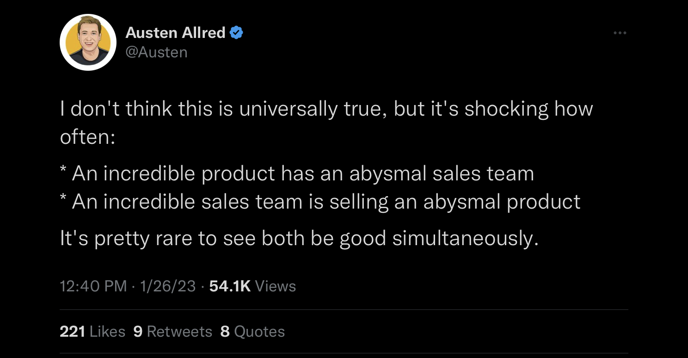

Berkson's Paradox
This post was prompted by this tweet (admittedly already rather old by the time of this posting):

The phenomenon observed here shouldn’t be particularly shocking — it’s exactly what we should expect in light of something called Berkson’s Paradox.
This paradox, much like its more famous cousin named after Edward Simpson, isn’t really a paradox at all, but it does lead to some counterintuitive observations. In this example, we appear to see a negative correlation between product quality and sales team quality. You can probably come up with some examples of this on your own — it’s not a particularly novel observation that in the enterprise software world, overpriced and obsolete solutions keep chugging along in the marketplace long past their expiration date simply on the strength of their sales relationships and brand.
The ‘paradox’ could be considered a case of sampling bias. In this case, there are two ways of looking at this negative correlation:
If a product is low-quality yet continues to persist in the market, it must have an exceptional sales team keeping it afloat.
If a product has poor marketing yet continues to persist in the market, it must be of exceptional quality in order to sell.
In either case, the bias is introduced by the fact that we’re only looking at products which are successful in the sense that they continue to be developed and sold and the companies producing them haven’t gone out of business.
In the following plot (adapted with modifications from an example in Richard McElreath’s Statistical Rethinking, 2nd Ed.), we generate uncorrelated product quality and sales team variables. Look what happens if we highlight just the ‘top performing’ data points (as determined by the sum of product quality and sales team performance):

Sure enough, we can see how the jumble of uncorrelated data points starts to look negatively correlated when you focus your attention on just the top-right quadrant of products. Despite the two variables being completely unrelated, we observe a strong relationship — the best performing sales organizations never have a top-tier product, and the best products always have mediocre sales teams. Paradoxical indeed!
If we look at this as implicitly conditioning on the success of the product, we might frame the same problem in terms of a collider bias — a phenomenon in which two variables (product quality and sales team quality) both directly influence the third variable (product success rate) on which we are conditioning, creating the appearance of association between the first two variables:

I’m still very early in my own causal inference learning journey, but once you start looking out for these concepts in the real world you’ll notice them everywhere — and how easy they are to miss if you haven’t been trained to spot them.